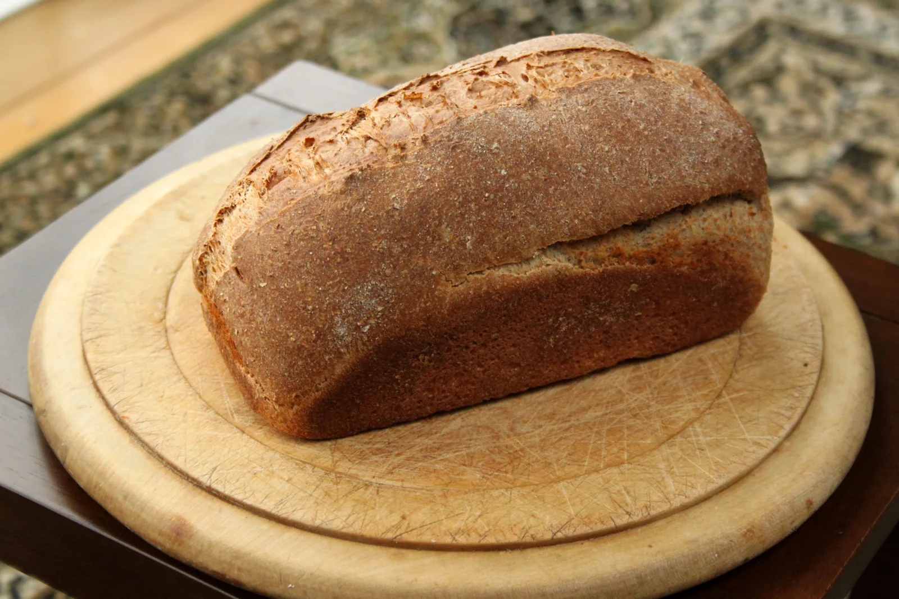

Fein ist auch voll
Vollkorn sagt etwas über die Bestandteile des Mehls aus, nicht über seine Körnung. Vollkornmehl kann sehr fein sein.

Herkunft & Geschichte
Vollkornbrot ist keine einzelne regionale Erfindung. Der Name beschreibt vielmehr, welche Teile des Getreidekorns verwendet werden. Anders als bei hellem Auszugsmehl bleiben Schale und Keimling neben dem Mehlkörper erhalten. Vollkorn kann fein gemahlen oder als gröberes Schrot verarbeitet werden.
Entsprechend vielfältig sind die Brote: vom lockeren Weizenvollkornbrot bis zum dichten Roggenschrotbrot. In vielen europäischen Backtraditionen haben solche Brote ihren festen Platz. Heute wird Vollkornbrot sowohl handwerklich als auch zu Hause gebacken – pur, mit Saaten oder mit verschiedenen Getreidearten.
Zum Weiterlesen: Hintergrund: Vollkornbrot ↗Zuletzt aufgerufen am
Von außen nach innen
Frischkäse, knackige Radieschen oder ein Hummus passen gut zur aromatischen Krume.
Eine Scheibe Wissen
Vollkorn sagt etwas über die Bestandteile des Mehls aus, nicht über seine Körnung. Vollkornmehl kann sehr fein sein.
Eine Saatenkruste macht ein Brot noch nicht zum Vollkornbrot. Entscheidend sind die verwendeten Getreidemahlerzeugnisse.
Auch ein dunkles Brot kann aus hellem Mehl bestehen. Den Vollkornanteil erkennt man zuverlässiger an Bezeichnung und Zutaten.
Vom Lesen zum Backen
Ein Kastenbrot aus Dinkelvollkornmehl mit einer Mischung aus Kernen. Das passende Rezept „Saftiges Vollkornbrot“ findest du auf Chefkoch.
Rezept auf Chefkoch ansehen ↗Externe Rezeptseite · öffnet in einem neuen TabZuletzt aufgerufen am